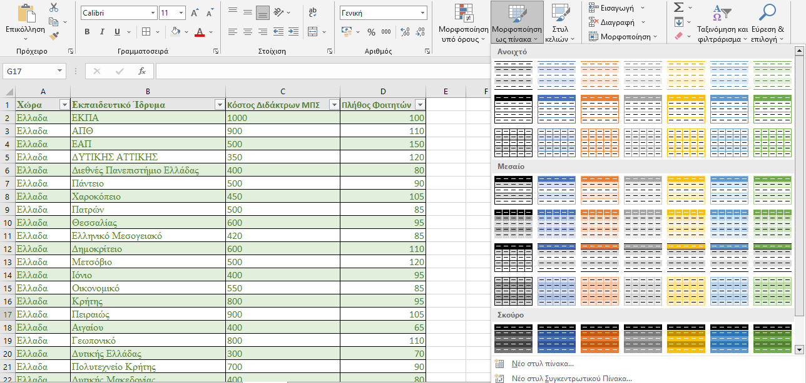
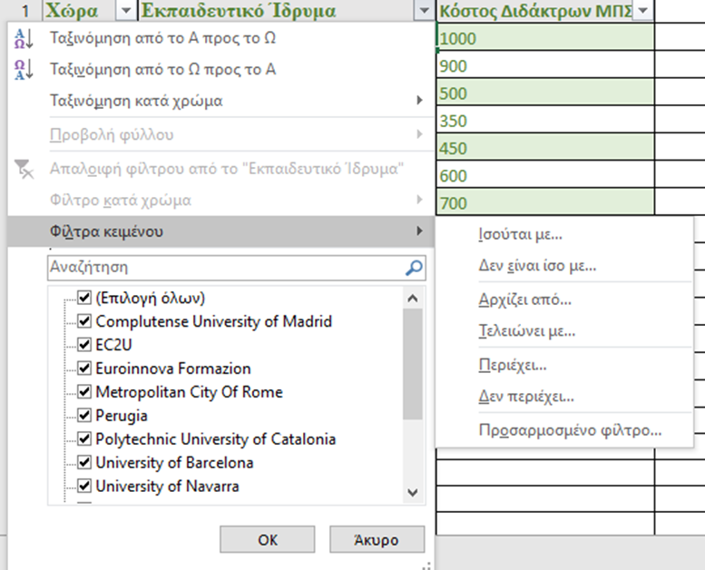

Πίνακες
Μπορούμε να μορφοποιήσουμε τα δεδομένα που περιέχονται σε ένα φύλλο Excel με την επιλογή «Μορφοποίηση ως πίνακα» από το κεντρικό μενού, διαλέγοντας το στυλ της παρουσίασής του. Επιλέγοντας με το ποντίκι την περιοχή των κελιών όπου επιθυμούμε «Δημιουργία πίνακα», ορίζουμε τη «Θέση δεδομένων για τον πίνακα» κι αν «Ο πίνακας μου περιέχει κεφαλίδες».

Με τον τρόπο αυτό δημιουργείται ένα είδος φίλτρου επιλογής και εμφάνισης ξεχωριστών δεδομένων από τον πίνακα, τα οποία μπορούμε να ταξινομούμε και να φιλτράρουμε από την «Κεντρική» επιλογή «Ταξινόμηση και Φιλτράρισμα», ή από τα «Δεδομένα», «Φίλτρο» «Φίλτρα κειμένου»
